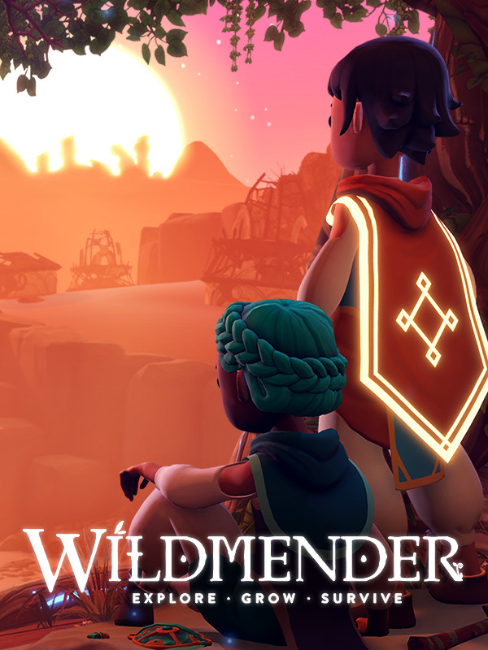

Wildmender
Wildmender
Details
|  | |
| Playtime | Not Played |
| Last Activity | Never |
| Added | 09/09/2025 17:13:15 |
| Modified | 09/09/2025 17:14:09 |
| Completion Status | Not Played |
| Library | Steam |
| Source | Steam |
| Platform | PC (Windows) |
| Release Date | 28/09/2023 |
| Community Score | |
| Critic Score | |
| User Score | |
| Genre | Adventure Indie Simulator Strategy |
| Developer | Muse Games |
| Publisher | Kwalee |
| Feature | Co-Operative Multiplayer Single Player |
| Links | Steam Epic Twitch Official Website Playstation Discord |
| Tag | |
Description
Wildmender is a game about bringing a deserted world back to life.
Explore the vast desert, alone or with friends. Collect plants and bring them back to your garden to thrive. Craft new tools and use them to shape the earth, and channel water to your plants. Delve into the mysteries of a fallen civilization and discover their magic. Befriend animals, spirits, and seek out the gods to help you defend the land from the vicious wraiths who seek to corrupt it. It’s up to you to save the world, one seed at a time.
Turn the Desert Green
With the tools you crafted, set out to grow the little oasis in the middle of a vast desert into your own thriving garden. Plant seeds, dig canals, nurture your plants, craft useful and beautiful structures, harness magical essence, protect against the forces of nature, and more! You’ll have plenty of space and choices to create the garden of your imagination. Acre by acre, you will reclaim the desert and reforest the world.
Explore, Forage, and Survive
Explore the desert around you. It is not as barren as you think! Forage for seeds and resources. Store them for a longer journey or bring them back to your garden, the choice is yours. Manage your food and water carefully as your journey through the dunes, the drained and salted sea, the poisoned canyons, and the cold and distant mountains. The farther you adventure, the greater the peril and rewards. Rare minerals, exotic plants, adorable creatures, and ancient spirits await your discovery.
Uncover the Mystery
What happened to this world? How did everything go wrong? How did the life-draining wraiths corrupt the land? Journey to the temples of the gods, learn their stories, rediscover arcane magic, unlock powerful weapons, tools, and abilities to help you defeat the wraiths, free the gods, and breathe new life to the world.
4-Player Co-op Gardening
Invite up to 3 of your friends to your garden online! Work together to tend your flourishing garden. Share resources and survive together. Adventure with friends through the lonely desert. Fight together against dangerous wraiths. But don’t forget, with more hands to garden you’ll have more mouths to feed!
Customize your Garden and Looks
Just let nature take its course or style the garden to your liking. Craft structures and tools to decorate and shape the terrain. Build bridges over canals, a footpath dotted with lanterns, stucco walls with a gate, magical sigils that return bees to your garden, a streaming waterfall with a pool below, and more. Craft a loom and weave a wide variety of outfits to travel the desert in style.
Features:
Dozens of plant species to cultivate and grow, each with a variety of cultivars to be discovered
50+ craftable structures and tools to build and manage your perfect garden
75+ unlockable perks and ability upgrades
1-4 player online Co-op multiplayer
Procedurally generated world for a unique challenge every replay
Day-night cycle: plants thrive and grow in the sun, while ghosts roam the cool nights
Variety of outfits for your character
Difficulty settings and game modes that can be adjusted on the fly